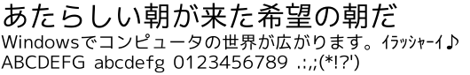
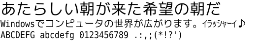
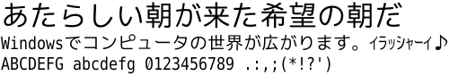

M+ と IPAフォントの合成フォント
フォント一覧
ここで配布しているフォントには、4 種類あります。
1) M+フォント(ひらがな、カタカナ、英数字) ＋ IPAゴシック(漢字)
可変幅(プロポーショナル)フォント。
M+フォントページの IPAフォントとの合成 の手順どおり、スクリプトで生成したものです。字形にはなにも手を加えていません。
M+1P+IPAG
M+アウトラインには かな が2種類あります。こちらは直線処理と曲線の組み合わせが特徴的な M+ 1。 M+1P+IPAG.ttf
M+2P+IPAG

こちらはゴシック体の字形を残しつつ、現代的な表情を見せる M+ 2。 M+2P+IPAG.ttf
2) M+フォント + IPAゴシック をこちらで一部改変して、濁点と半濁点を判別しやすくしたもの
可変幅(プロポーショナル)フォント。
1.のフォントをFontForgeというソフトで読み込んで一部手を加えました。半濁点巨大化処理をしたものです。ビットマップは含んでいません。
小さいサイズで表示したとき、濁点と半濁点の区別がつくフォントがほしくて作成しました。 印刷には向いてないと思います。あくまでディスプレイ表示向けです。
M+1P+IPAG circle
半濁点(ぱぴぷぺぽパピプペポ）と音引き(ー)の形が変わっています。あと半角カタカナも IPAゴシックのものではなく、M+の全角カタカナの幅を狭くしたものに かわっています。 M+1P+IPAG-circle.ttf
M+2P+IPAG circle
M+2P+IPAG-circle.ttf
3) M+フォント(ひらがな・カタカナ) + IPAゴシック(漢字) + Bitstream Vera Sans Mono(英数字) の等幅フォント
等幅フォント。
2.のフォントに、改変・再配布可能な 'Bitstream Vera Sans Mono' フォントを組み込んで、等幅フォント化したものです。 フォント名が 'M+?VM' (VeraMono の略) になっています。
Monospace/Fixed Width Programmer's Fonts によると、'Bitstream Vera Mono' はプログラマに人気のフォントのようですよ。
M+1VM+IPAG circle

Bitstream Vera Mono フォントはもともとゼロの形がこのように、大文字のオーの中に 点 があります。 M+1VM+IPAG-circle.ttf
M+2VM+IPAG circle

M+2VM ではゼロの形を、大文字のオーの中に斜線 の形に変えてみました。 M+2VM+IPAG-circle.ttf
4) IPAフォント
アーカイブにもとから含まれていたものです。なにも手を加えていません。ライセンス上、含めないとならない(？)ようです。
IPAゴシック
等幅フォント。 ipag.ttf
IPA Pゴシック
可変幅(プロポーショナル)フォント。 ipagp.ttf
IPA UIゴシック
可変幅(プロポーショナル)フォント。 ipagui.ttf
IPA明朝
等幅フォント。 ipam.ttf
IPA P明朝
可変幅(プロポーショナル)フォント。 ipamp.ttf
以上です。全部インストールすると多くて混乱するかもしれないので、選んでインストールしたほうがいいかもです。